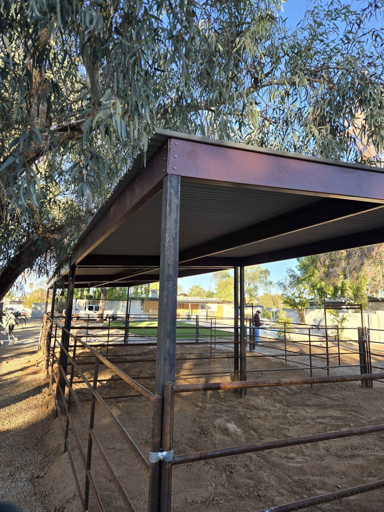
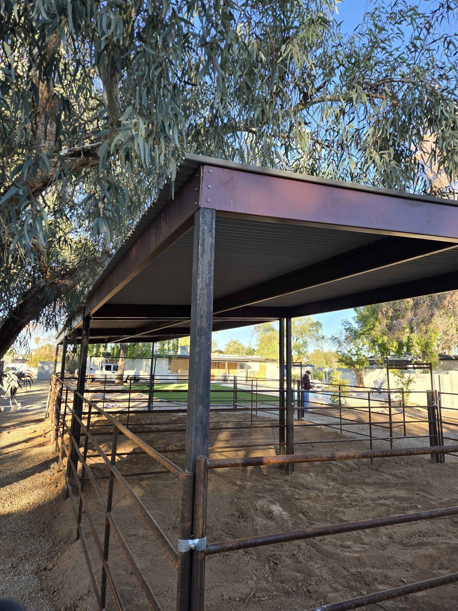

Portable Horse Corrals For Sale
Premium Mobile Enclosures for Arizona Ranchers


Why Choose Portable Horse Corrals?
In Arizona's vast landscapes, flexibility is key. Our portable horse corrals give you the freedom to move your enclosures wherever your horses need them - perfect for rotational grazing, events, or temporary containment.
Built for Arizona Conditions
Our corrals are engineered to withstand:
- Scorching summer heat (up to 120°F)
- Monsoon rains and wind
- Dry desert conditions that degrade inferior materials
- Daily wear from even your most spirited horses
"We've used Ok-Corrals' portable pens for 5 years now at our guest ranch. They hold up to constant moving between pastures and still look nearly new. Best investment we've made for our operation."
- Jim B., Ranch in Wickenburg
Our Portable Corral Options
 

Standard Portable Corrals
Perfect for:
- Small herds (2-4 horses)
- Temporary events
- Rotational grazing systems
- Training areas
Heavy-Duty Corrals
Built for:
- Larger herds (5+ horses)
- Breeding operations
- Long-term use
- More spirited horses
Custom Configurations
Tailored solutions:
- Unique layouts
- Special gates/access points
- Integrated shade options
- Combination with stationary pens
| Model | Dimensions | Weight | Horse Capacity | Special Features |
|---|---|---|---|---|
| Trailblazer | 12' x 12' | 250 lbs | 2 horses | Quick-set design, removable panels |
| Ranch Hand | 16' x 16' | 400 lbs | 4 horses | Double gates, reinforced corners |
| Outlaw | 24' x 24' | 600 lbs | 6-8 horses | Modular design, optional roof |
Why Arizona Ranchers Choose Ok-Corrals
Superior Construction

Our portable corrals feature:
- Galvanized steel construction (rust-proof)
- Schedule 40 pipe for maximum strength
- Welded joints (no weak bolt-together points)
- Rubber-coated edges for horse safety
Easy Mobility

Designed for hassle-free movement:
- Breakdown in minutes (no tools required)
- Fits in standard pickup beds
- Optional wheel kits available
- Lightweight yet sturdy design
"What impressed me most was how easy these corrals are to move. I'm 65 and can relocate my entire setup by myself in about 15 minutes. The quality is outstanding too - after 3 years in the Arizona sun, they still look brand new."
- Martha T., Sonoita
Frequently Asked Questions
1. How easy are the corrals to move?
Our portable corrals are designed for easy mobility. Most models can be disassembled and moved by one person in under 30 minutes. The panels are lightweight yet strong, and many customers report being able to handle relocation without additional help.
2. Can I customize the corrals?
Absolutely! We offer fully customizable designs including:
- Size adjustments (any dimension)
- Additional gates/access points
- Integrated shade options
- Special rail configurations
- Custom colors/powder coating
3. Do you offer delivery and setup?
Yes, we provide free delivery with installation throughout Southern Arizona, including:
- Phoenix metro area
- Tucson and surrounding areas
- Prescott, Flagstaff, and Northern AZ
- All rural areas in between
Our team will deliver, assemble, and ensure your corral is perfectly positioned and secure.
4. How do portable corrals handle Arizona's weather?
Our corrals are specifically engineered for Arizona conditions:
- Galvanized steel resists rust from monsoon moisture
- UV-resistant coatings prevent sun damage
- Reinforced design stands up to desert winds
- Materials won't warp or crack in extreme heat
Ready for Portable Freedom?
Get Your Custom Portable Corral Today


Contact Ok-Corrals today for a free consultation and quote. Our Arizona-based team will help you design the perfect portable corral solution for your needs.